1. Introduction
The following vignette aims at documenting and illustrating workflows
for producing histograms using the function plotHistogram
from the tlf package.
2. Illustration of basic histograms
2.1. Data
The data showed in the sequel is available at the following path:
system.file("extdata", "test-data.csv", package = "tlf").
In the code below, the data is loaded and assigned to
histData.
# Load example
histData <- read.csv(
system.file("extdata", "test-data.csv", package = "tlf"),
stringsAsFactors = FALSE
)
# histData
knitr::kable(utils::head(histData), digits = 2)| ID | Age | Obs | Pred | Ratio | AgeBin | Sex | Country | SD |
|---|---|---|---|---|---|---|---|---|
| 1 | 48 | 4.00 | 2.90 | 0.72 | Adults | Male | Canada | 0.69 |
| 2 | 36 | 4.40 | 5.75 | 1.31 | Adults | Male | Canada | 0.19 |
| 3 | 52 | 2.80 | 2.70 | 0.96 | Adults | Male | Canada | 0.98 |
| 4 | 47 | 3.75 | 3.05 | 0.81 | Adults | Male | Canada | 0.59 |
| 5 | 0 | 1.95 | 5.25 | 2.69 | Peds | Male | Canada | 0.44 |
| 6 | 48 | 2.45 | 5.30 | 2.16 | Adults | Male | Canada | 0.07 |
2.2. plotHistogram
Besides, the usual tlf input arguments commonly used by
the plot functions (data, metaData,
dataMapping, plotConfiguration and
plotObject), the function plotHistogram also
includes the following optional input arguments:
-
x: Numeric values used in the histogram instead ofdataanddataMapping. -
bins: Number of bins -
binwidth: Width of each bin, overwriting the number of bins. -
stack: Logical defining if histogram bars are stacked -
distribution: Name of a distribution to fit to the data. Currently, only normal and log-normal distributions are available.
2.3. Minimal examples
Most of the time, the optional input x is convenient to
assess the distribution of the data.
# Use directly x for quick histogram
plotHistogram(x = histData$Ratio)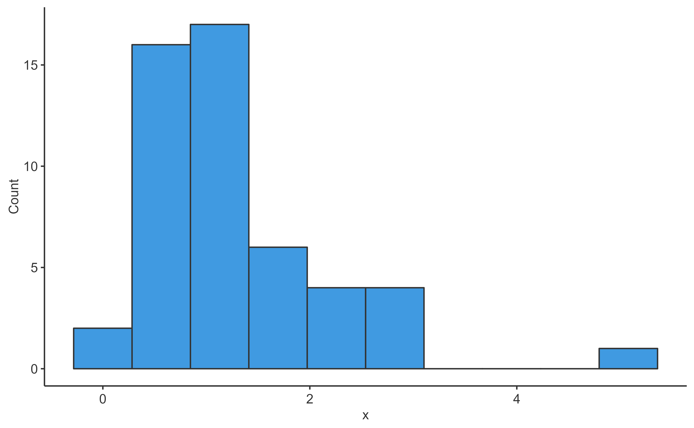
# Use directly x and bins for quick histogram with a defined number of bins
plotHistogram(x = histData$Ratio, bins = 7)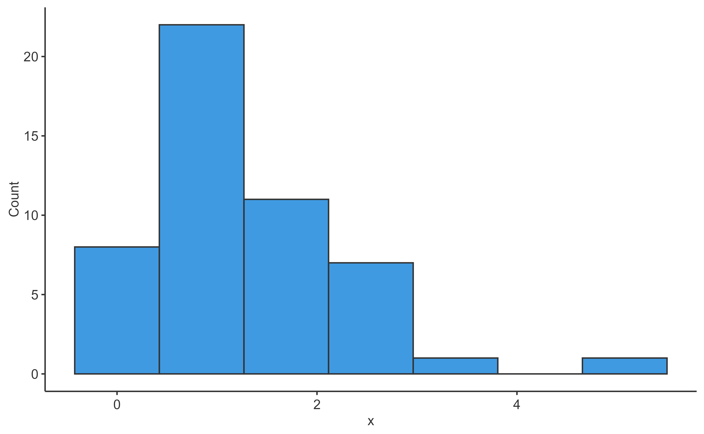
2.4. Examples using data and
dataMapping
Workflows in tlf usually includes the definition of
data, their metData and
dataMapping.
# Create HistogramDataMapping object
histoMapping <- HistogramDataMapping$new(
x = "Ratio",
fill = "Sex"
)
plotHistogram(
data = histData,
dataMapping = histoMapping
)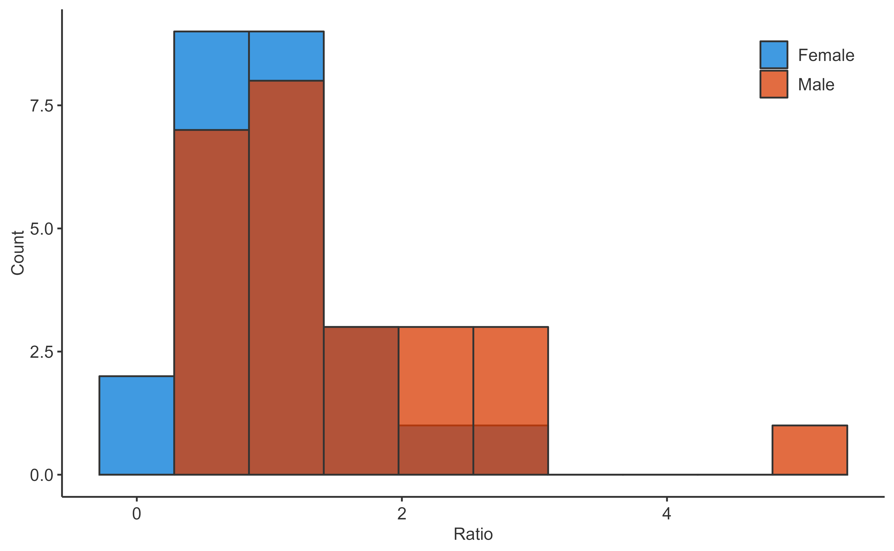
In such cases, the optional arguments previously presented can be
included in dataMapping.
# Create HistogramDataMapping object
histoMapping <- HistogramDataMapping$new(
x = "Ratio",
fill = "Sex",
stack = TRUE
)
plotHistogram(
data = histData,
dataMapping = histoMapping
)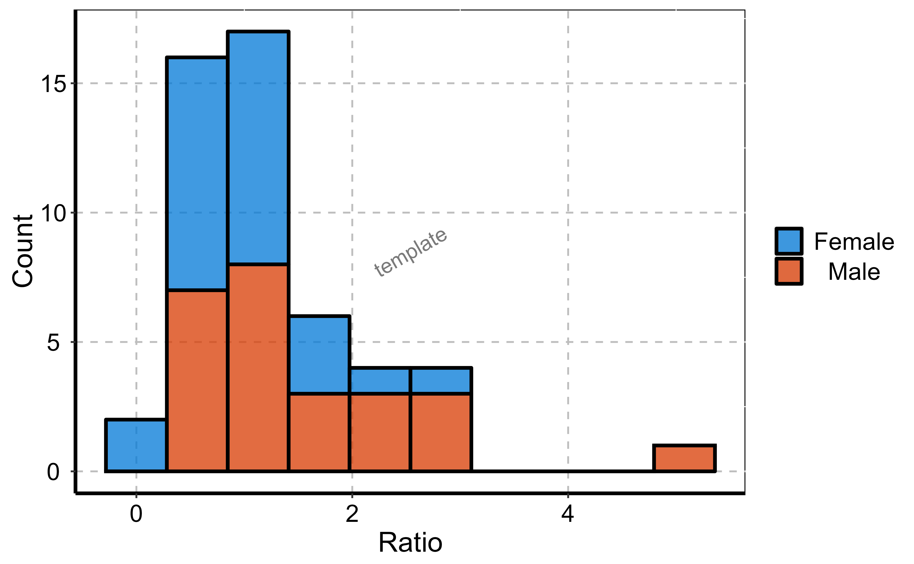
If defined as plotHistogram input arguments, they will
overwrite dataMapping.
# Create HistogramDataMapping object
histoMapping <- HistogramDataMapping$new(
x = "Ratio",
fill = "Sex",
bins = 3
)
# bin defined in both, plotHistogram has priority and overwrites dataMapping internally
plotHistogram(
data = histData,
dataMapping = histoMapping,
bins = 6
)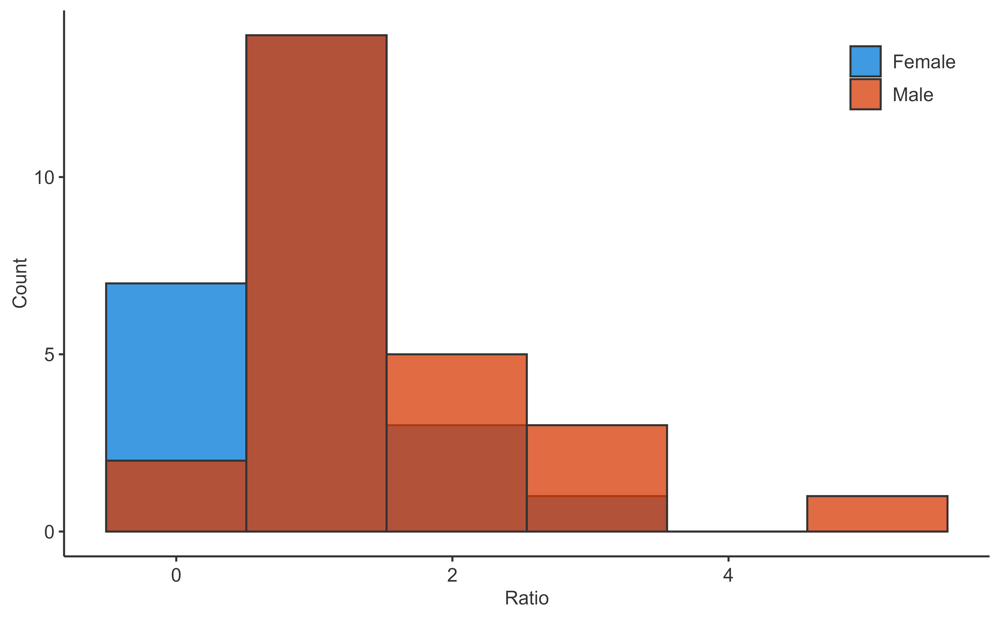
2.5. Focus on binning
There are 3 ways of defining how the data is binned. The priority between each method was defined according to their specificity. Method 1, the simplest and used as default, defines the number of bins. It can be overwritten by method 3, which defines the width of each bin. Method 2 is the more specific and defines the bin edges, consequently it cannot be overwritten by method 3.
*1. Define the number of bins with the input argument
bins (using a single value)
# Create HistogramDataMapping object
histoMapping <- HistogramDataMapping$new(
x = "Ratio",
fill = "Sex"
)
# Define the number of bins in final plot
plotHistogram(
data = histData,
dataMapping = histoMapping,
bins = 6
)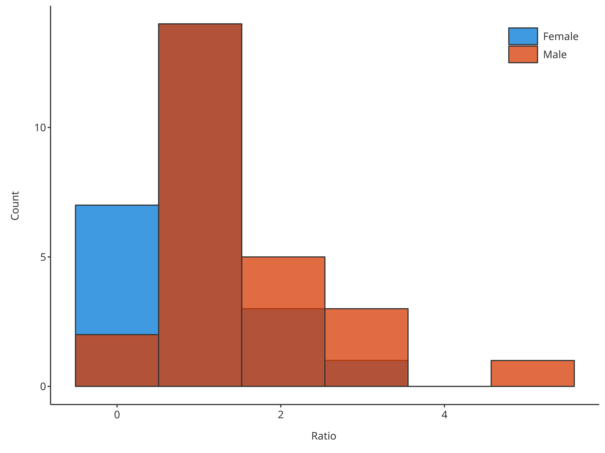
*2. Define the edges of the bins with the input argument
bins (using an array of values)
# Create HistogramDataMapping object
histoMapping <- HistogramDataMapping$new(
x = "Ratio",
fill = "Sex"
)
# Define the edges of bins in final plot
plotHistogram(
data = histData,
dataMapping = histoMapping,
bins = seq(0, 6, 0.2)
)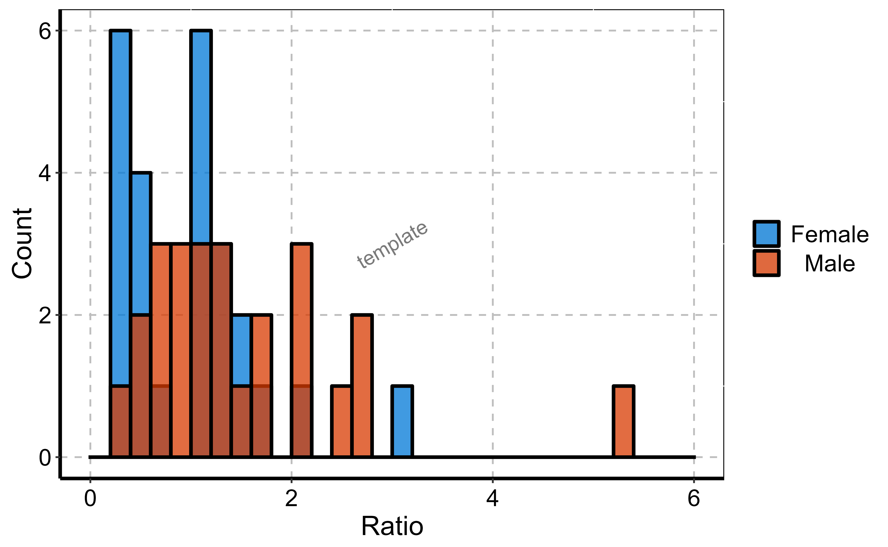
*3. Define the width of bins with the input argument
binwidth (using a single value).
# Create HistogramDataMapping object
histoMapping <- HistogramDataMapping$new(
x = "Ratio",
fill = "Sex"
)
# Define the width of bins in final plot
plotHistogram(
data = histData,
dataMapping = histoMapping,
binwidth = 0.4
)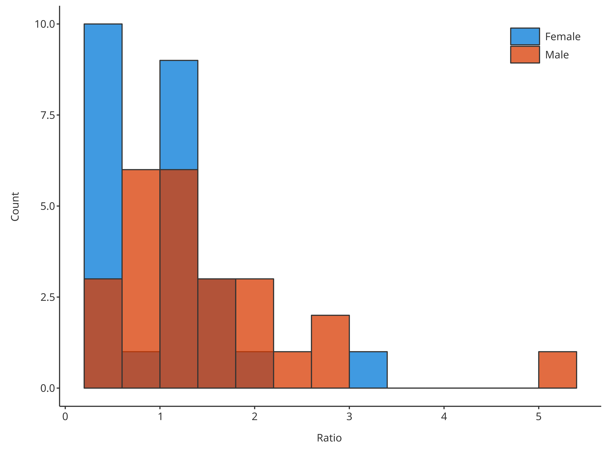
2.6. Focus on distribution fit
The optional input distribution aims at providing the
possibility of fitting the data distribution. Currently, two
distributions can be fitted by the function
plotHistogram:
- Fit a normal distribution and draw the distribution mean as vertical
line using
"normal" - Fit a log-normal distribution and draw the distribution mode as
vertical line using
"logNormal"
# Plot normal distribution
plotHistogram(
x = histData$Ratio,
distribution = "normal"
)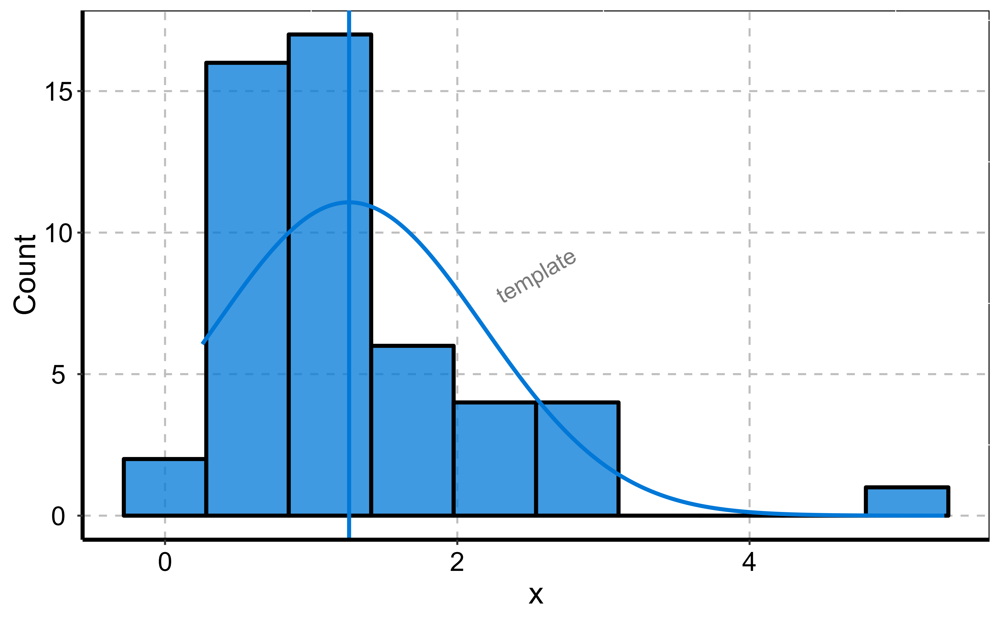
# Plot normal distribution
plotHistogram(
x = histData$Ratio,
distribution = "logNormal"
)To compare multiple distributions, they can be defined through the
dataMapping:
# Create HistogramDataMapping object split by gender
histoMapping <- HistogramDataMapping$new(
x = "Ratio",
fill = "Sex"
)
# Plot normal distribution for each gender
plotHistogram(
data = histData,
dataMapping = histoMapping,
distribution = "normal"
)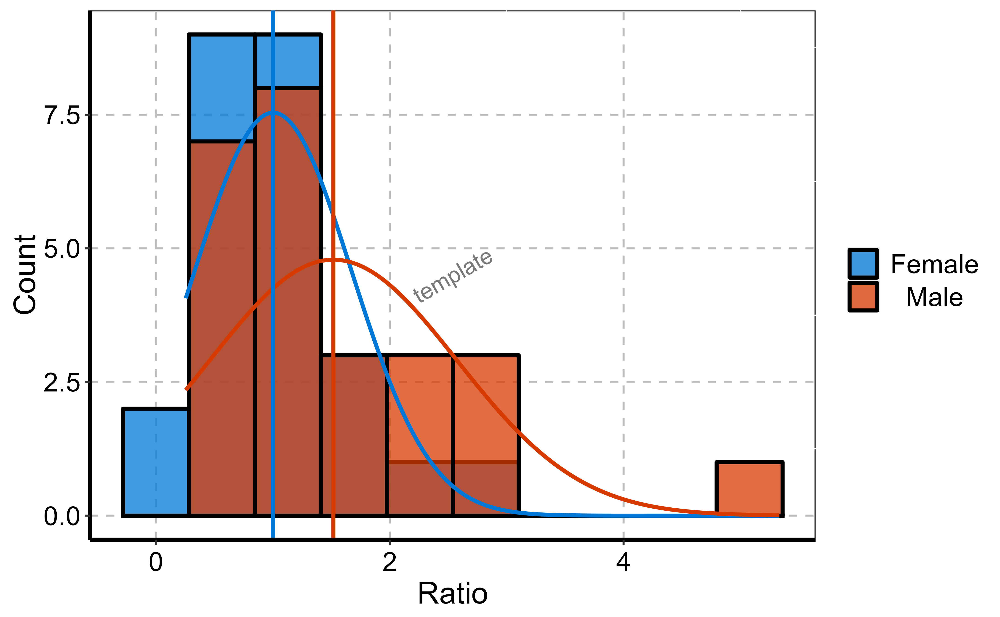
With option stack, it is also possible to get the
distribution of the sum only while splitting the content of the
bars.
# Create HistogramDataMapping object split by gender
histoMapping <- HistogramDataMapping$new(
x = "Ratio",
fill = "Sex"
)
# Plot normal distribution of sum but bars are split by gender
plotHistogram(
data = histData,
dataMapping = histoMapping,
distribution = "normal",
stack = TRUE
)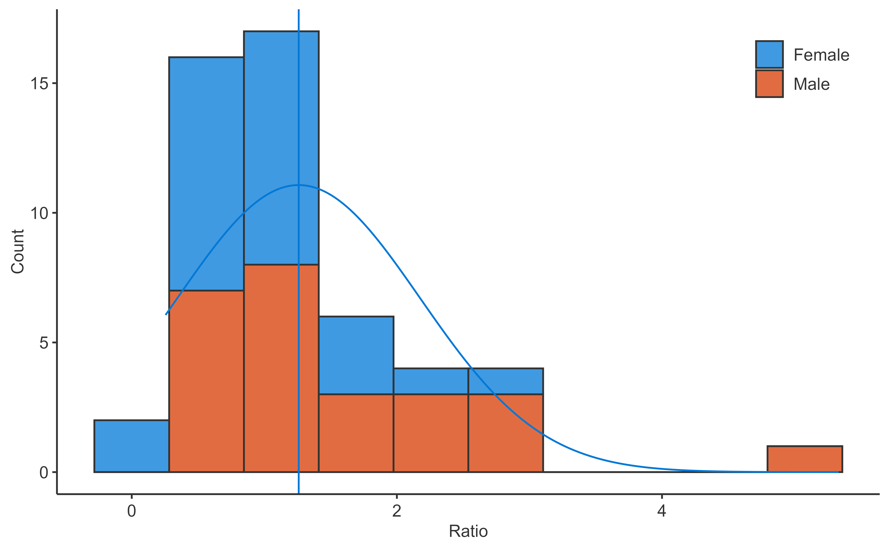
The HistogramPlotConfiguration objects can be used to
tune the final plot aesthetics.
histoConfiguration <- HistogramPlotConfiguration$new(
xlabel = "Ratios",
ylabel = "Occurences"
)
histoConfiguration$ribbons$fill <- "grey80"
histoConfiguration$lines$color <- "firebrick"
# Plot normal distribution of sum but bars are split by gender
plotHistogram(
x = histData$Ratio,
plotConfiguration = histoConfiguration,
distribution = "normal"
)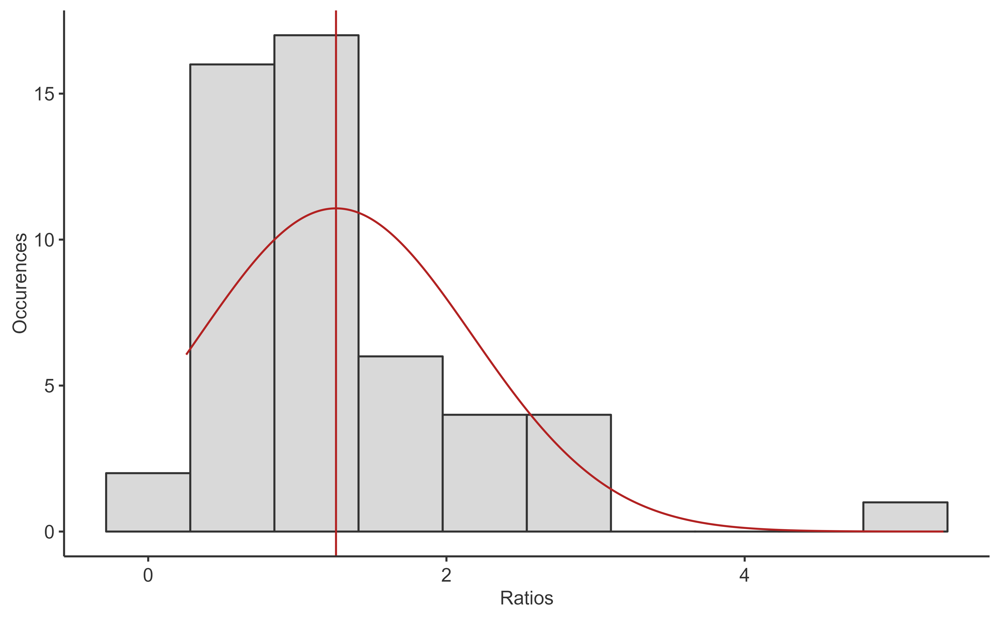